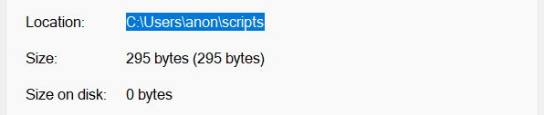

Running Python Scripts
In this guide, we will discuss how to run Python scripts from a terminal. As a prerequisite, make sure that you've already successfully installed Python, and you know how to open a terminal, such as the Windows Command Prompt.
Create A Python Script
If you haven't already, download a suitable text editor for writing Python scripts. Once that's done, create a new file (name it "test.py"), and enter the following Python code.
1print("It works!")
Save the file and make note of its file path. On Windows, this is done by first locating the file in the File Explorer. Then, right click the file and select "Properties". The file path is listed next to the "Location" field (it might be helpful to copy it from here).
Run A Python Script
Now that you've created the Python script, open a terminal and navigate to the directory (folder) that it's saved in. Assuming you are on a Window's computer, and the script is saved in the directory located at C:\Users\anon\scripts, you can do this by using the cd command and entering (or pasting) the path as shown.
$cd C:\Users\anon\scripts
Many terminals will update the prompt to indicate which directory you're in, so you should be able to tell that the command worked.
Finally, enter the command python3 test.py. If you see the output It works!, then congratulations! You've successfully written and run (presumably) your first Python script!
You might also be able to use the python command in addition to python3.
The key takeaway is that when using a terminal, you must navigate to the directory that your script is located in to run it. Failing to do so will result in an error message. We got the error message shown below on the Command Prompt on Windows 11.
python3: can't open file 'C:\\Users\\anon\\scripts\\myscript.py': [Errno 2] No such file or directory
Alternatively, instead of navigating to the directory of your script as shown previously, you can simply enter the full path of the script directly with the python3 command as follows.
$python3 C:\Users\anon\scripts\test.py